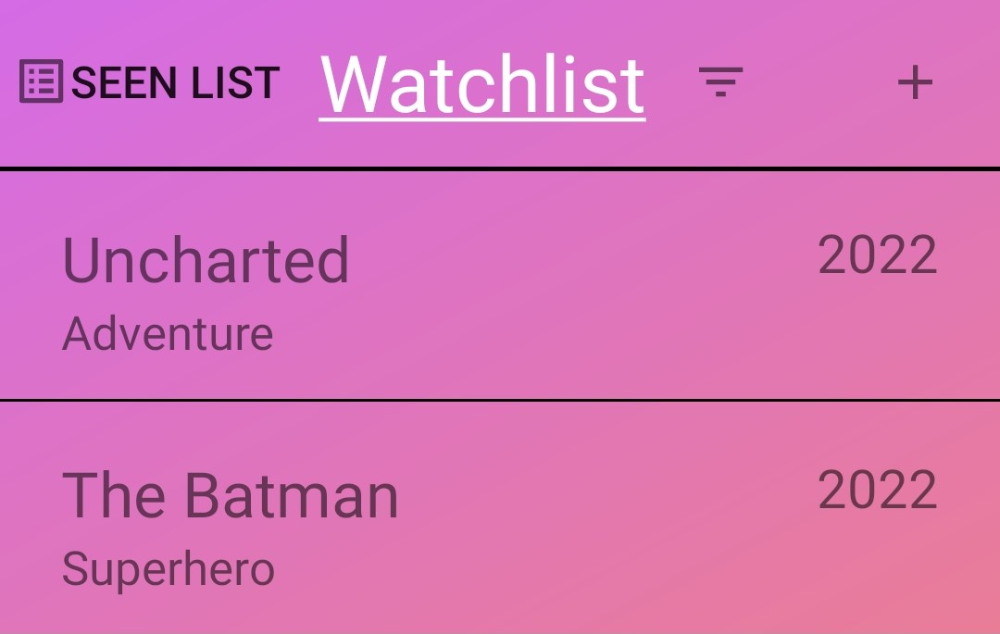
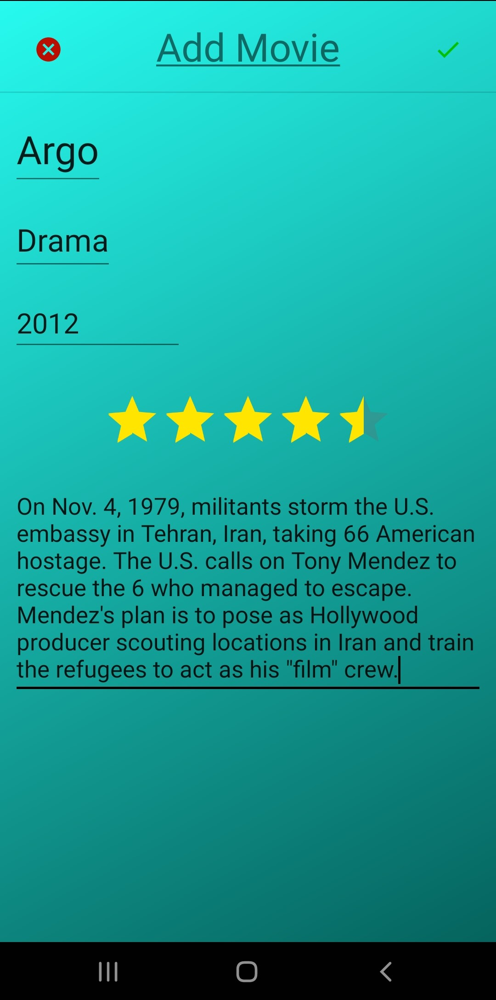
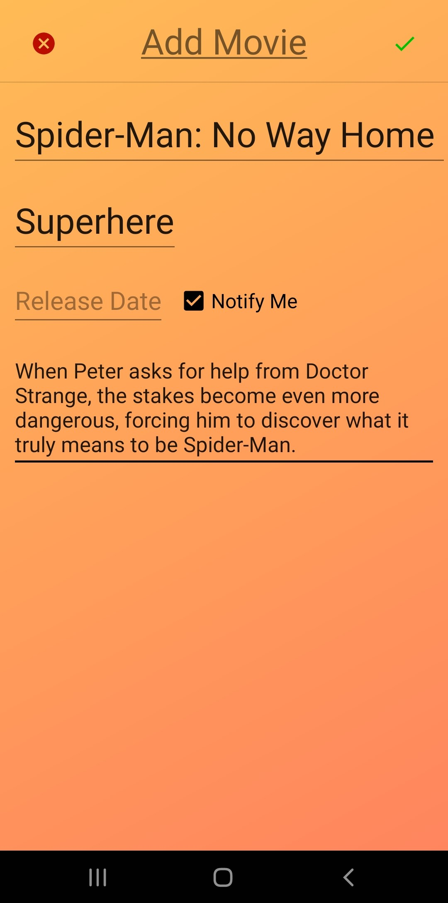

The picture above shows a screenshot of what the "Seen List" of movies page looks like. As you can see each entry has a place for a title, genre,
and release date. In the top left is a button that takes you to the "Watchlist" page. In the top right there is a button for adding a movie to this
"Seen List" page and a button for filtering this list.

The picture above shows a screenshot of what the "Watchlist" of movies page looks like. As you can see each entry has a place for a title, genre,
and release date. In the top left is a button that takes you to the "Seen List" page. In the top right there is a button for adding a movie to this
"Watchlist" page and a button for filtering this list.

The picture above shows a screenshot of what the "Add Movie" page looks like when adding a movie to the "Seen List" page. There is a place for the title,
genre, release year, your personal rating, and a description of the movie. Additionally, there is a button in the top left to cancel adding and a button
in the top right to finish adding the entry.

The picture above shows a screenshot of what the "Add Movie" page looks like when adding a movie to the "Watchlist" page. There is a place for the title,
genre, release date, a box to check if you want to be notified when it releases, and a description of the movie. Additionally, there is a button in the top left to cancel adding and a button
in the top right to finish adding the entry.